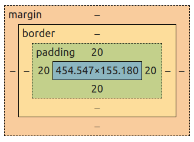
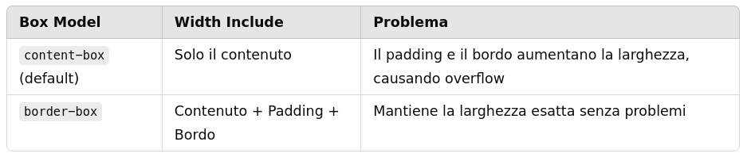
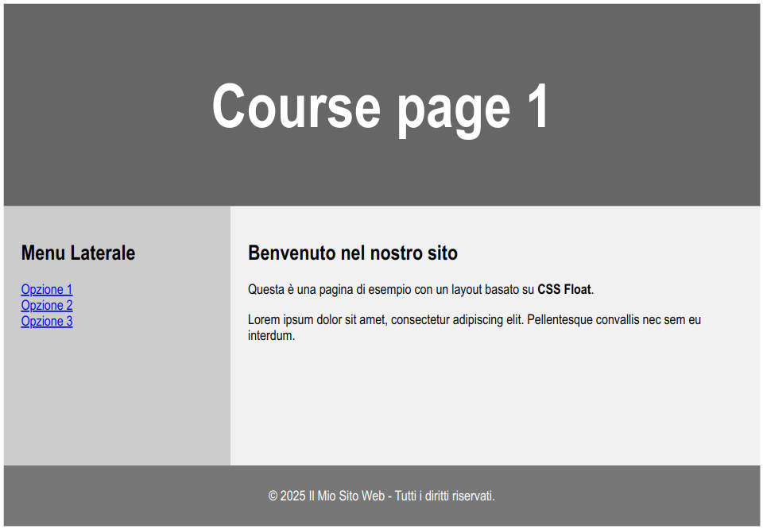
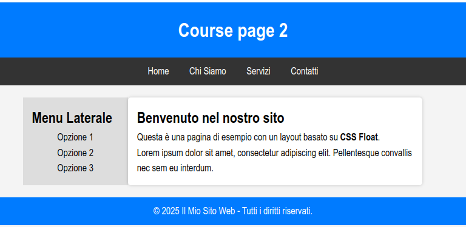
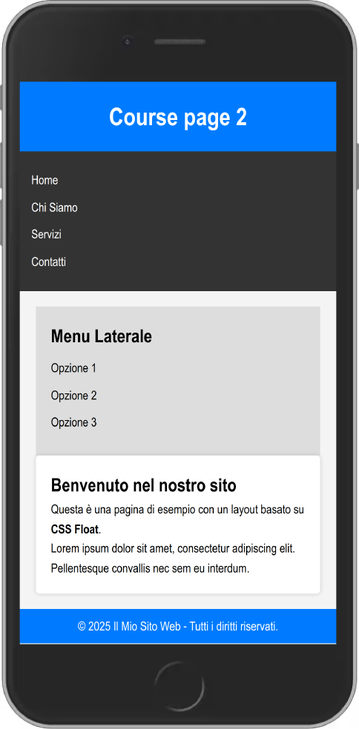
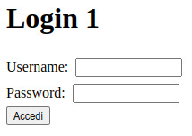
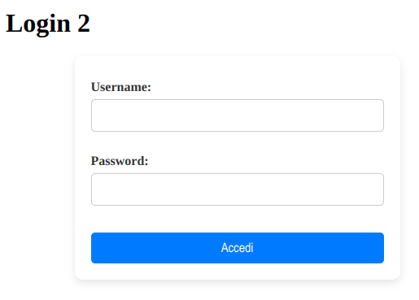

Appunti di laboratorio - elenco completo Contatto maurizio.boscaini@unitn.it
NOTA: questi appunti sono da intendersi solo come aiuto allo studio e alla preparazione all'esame.
La programmazione è difficile...ma è anche bella, utile e importante.
Si può imparare a programmare solo programmando.
Riferimento
Il browser consente di salvare il contenuto di una pagina secondo tre modalità:
I tag <div> e <span> sono contenitori generici di testo e/o altri elementi. Il primo è di tipo blocco, mentre il secondo è di tipo inline.
I percorsi dei file e, più in generale, delle risorse vengono utilizzati quando si collegano file esterni, come:
Un percorso assoluto parte con il protocollo (es. https) oppure dalla radice del server web ed inizia con "/" (es. /immagini/...)
È un contenitore di metadati.
I dati si possono distinguere in:
Il box model definisce per i rettangolo associato nella pagina a ciascun elemnento HTML le seguenti parti:

Inoltre, per le dimensioni (width e height) del rettangolo si hanno i seguenti possibili valori per la proprietà box-sizing:

Quasi sempre i siti web visualizzano i contenuti su più colonne (come riviste o quotidiani cartecei).
Il layout descrive la disposizione dei contenuti nella pagina, ovvero la struttura di presentazione dei contenuti.
HTML5 ha diversi elementi semantici che definiscono le diverse parti di una pagina web:
Per creare un layout multicolonna si possono usare alcune tecniche:
display con valore grid o inline-grid ed è adattta a definire layout con elementi disposti per righe e colonnedisplay con valore flex ed è adattta a definire layout con elementi disposti su una riga oppure su una colonnaPer realizzare il layout web di una pagina spesso si utilizza la proprietà CSS float.
La proprietà CSS float specifica come un elemento dovrebbe galleggiare. La proprietà CSS clear specifica quali elementi possono galleggiare accanto all'elemento cleared e su quale lato.
Elementi HTML da applicare (oltre a quelli già visti in esercizi precedenti:
header, section, nav, article, footer
Utilizza il CSS Float Layout per per creare la pagina HTML come quella riportata di seguito con la seguente struttura e i seguenti file nel file system:
/course_page1
├── course_page1.html
├── /css
│ ├── styles.css

Il web design responsive consiste nel creare pagine web che abbiano un aspetto gradevole su tutti i dispositivi. Un web design responsive si adatterà automaticamente a diverse dimensioni dello schermo e viewport.
Elementi HTML da applicare (oltre a quelli già visti in esercizi precedenti:
header, section, nav, article, footer
Utilizza il CSS Float Layout per per creare la pagina HTML come quella riportata di seguito con la seguente struttura e i seguenti file nel file system:
/course_page2
├── course_page2.html
├── /css
│ ├── styles.css


Elementi HTML da applicare (oltre a quelli già visti in esercizi precedenti):
Crea la pagina HTML come quella riportata di seguito con la seguente struttura e i seguenti file nel file system:
/login_form1
├── login_form1.html
├── /css
│ ├── styles.css

Elementi HTML da applicare (oltre a quelli già visti in esercizi precedenti):
Crea la pagina HTML come quella riportata di seguito con la seguente struttura e i seguenti file nel file system:
/login_form2
├── login_form2.html
├── /css
│ ├── styles.css
